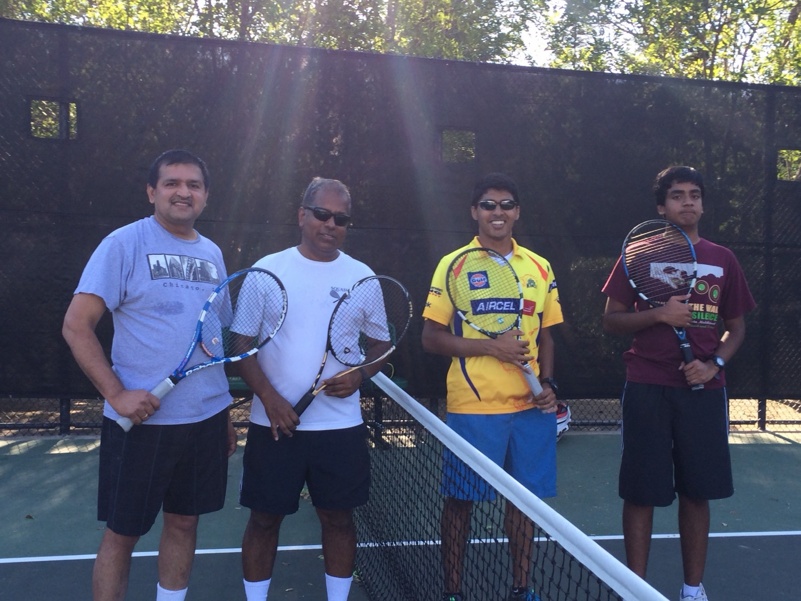
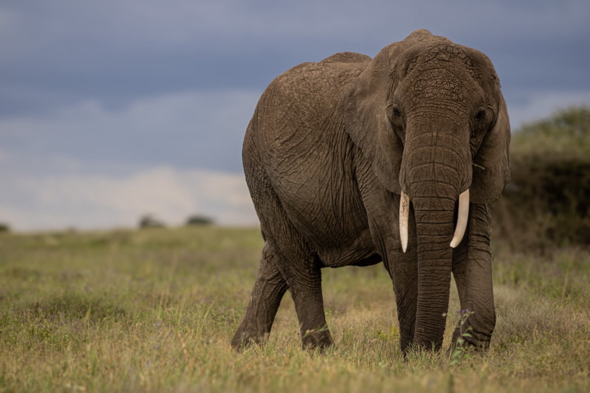
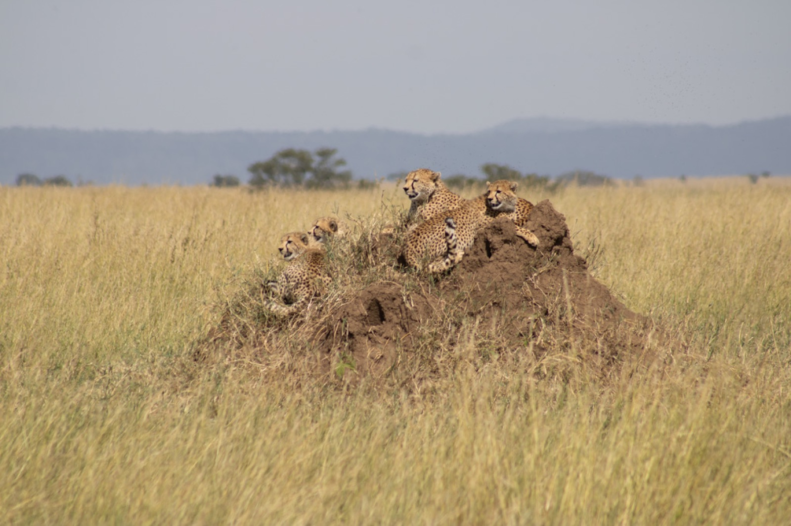
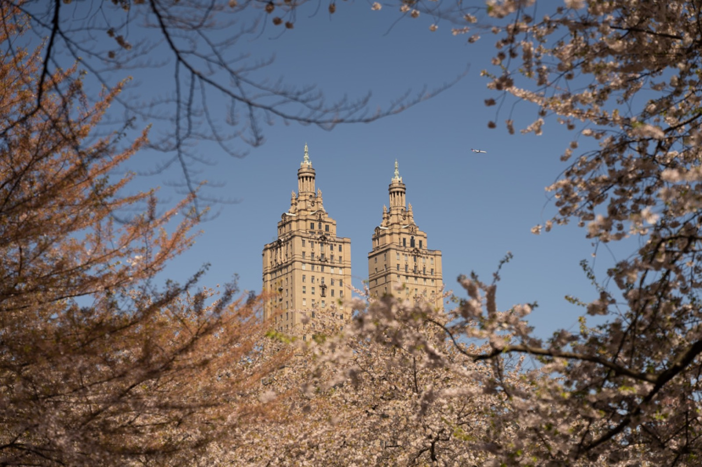
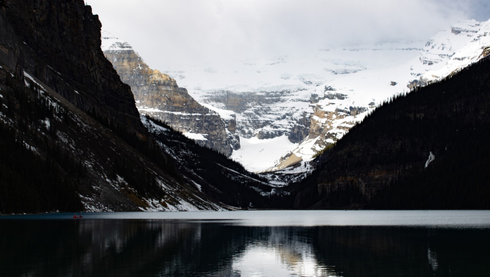
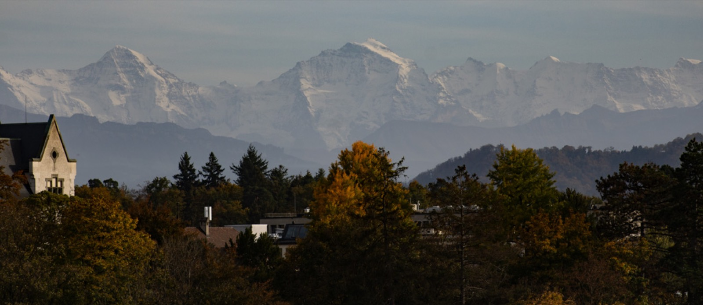
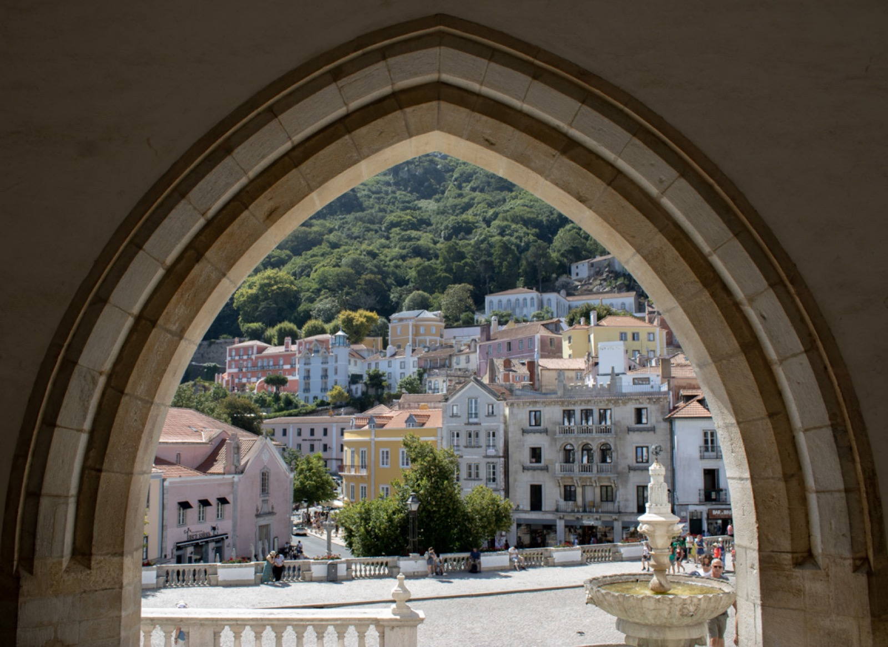
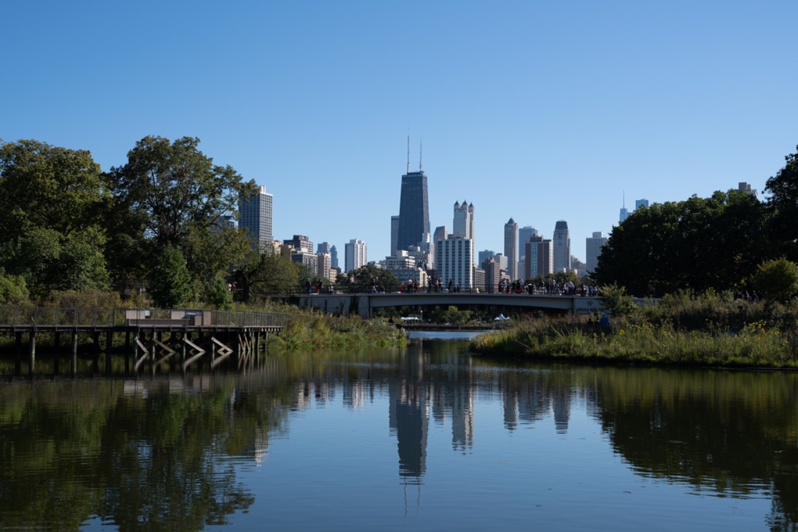
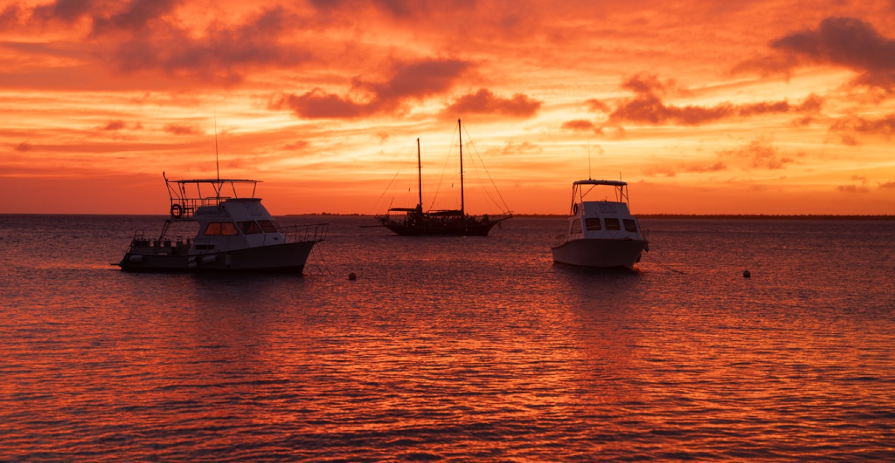

Interests
Tennis on the court, photography everywhere else.
Tennis

Tennis is how I stay close to my father, whom I lost unexpectedly in 2020. He coached me on my serve, making me serve basket after basket. It was bitter work in the moment, but the results paid off on the court with my serve being my best stroke.
But, the memories I treasure most are from playing doubles together. We were a team and would talk through our plan and laugh off the misses. When losing a few points in a row, he’d remind me to forget it and focus on the next one.
Doubles taught me how to communicate, trust a partner, and adapt on the fly. It’s also where I learned that teamwork is just more fun. I bring that same energy to everything I do, one point at a time.
Photography
My DSLR comes with me on every vacation. I like slowing down to look for the shot, and I enjoy editing the photos afterward. Here are a few favorites.








To see more, check out my photo Instagram, @picsbykeshav (opens in a new tab) →